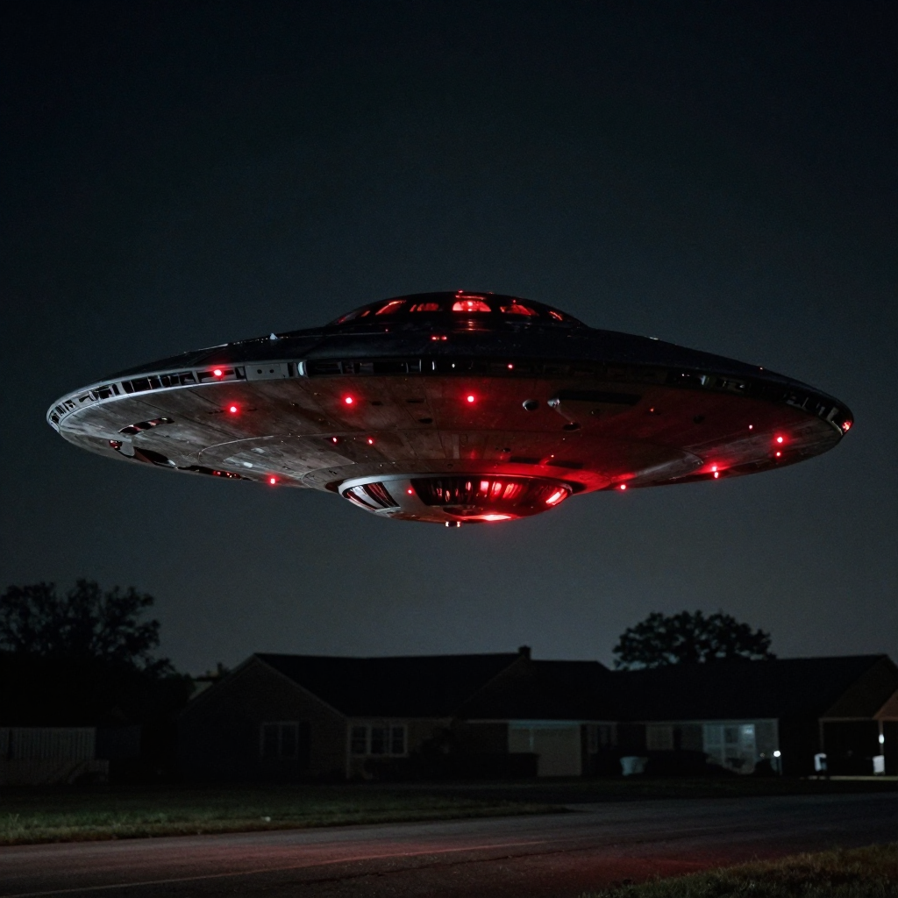
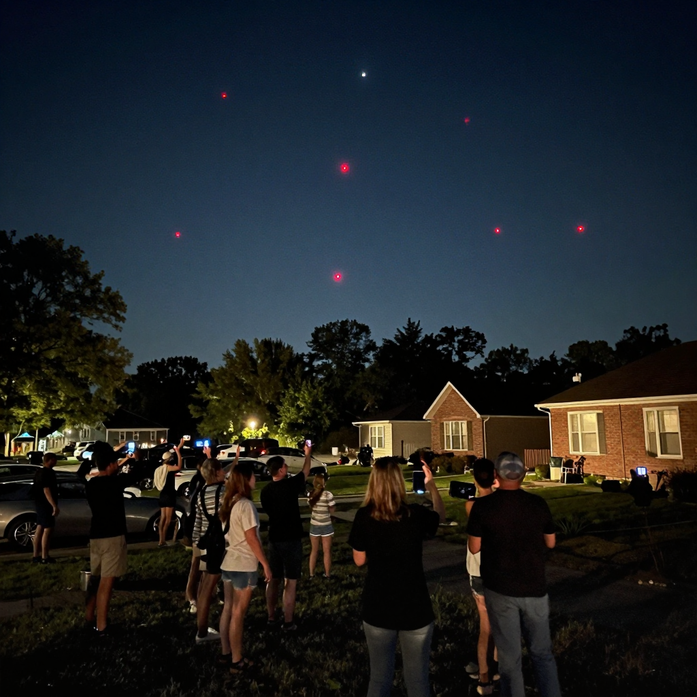

New Jersey Drones: The Mystery in the Sky!

Mysterious drones appeared over New Jersey neighborhoods - and nobody knows where they came from!
Imagine looking out your window at night and seeing strange glowing objects hovering over your neighborhood. They're not planes. They're not helicopters. They're drones - but not like any drones you've ever seen.
This is exactly what happened to residents of New Jersey. For weeks, mysterious drones appeared in the night sky, baffling everyone who saw them. The military, the government, and aviation experts all tried to explain them - but the mystery remains unsolved!
What Did People See?
The sightings began when residents started noticing unusual aircraft in the sky. These weren't normal drones you can buy at a store. Witnesses described:
- 🔴 Unusual lights: Red, white, and sometimes green lights in strange patterns
- 📏 Large size: Much bigger than hobby drones - some said car-sized!
- 🔇 Quiet operation: They made very little noise for their size
- ⏰ Night flights: They only appeared after dark
- 🛸 Strange movement: They could hover, fly fast, and change direction quickly

Witnesses described drones unlike any commercial models available to the public.
📱 Caught on Camera
Many residents recorded the drones with their phones. The videos show objects that don't match any known aircraft. Some appeared to fly in formation, as if they were working together!
The Investigation
When reports started pouring in, officials took notice. The FBI, Department of Homeland Security, and even the military got involved. But their investigations only raised more questions!
Officials considered several possibilities:
🎮 Hobbyists: Could regular drone enthusiasts be responsible? Unlikely - these aircraft were too large, too sophisticated, and too coordinated.
🏢 Private Companies: Maybe a corporation was testing new technology? But no company came forward to claim responsibility.
🇺🇸 Military Operations: Some wondered if the U.S. military was conducting secret tests. The military denied any involvement.
🌐 Foreign Drones: Could another country be spying? Officials investigated but found no evidence of foreign involvement.

Residents gathered outside to watch the mysterious drones, recording them with their phones.
Why Is This So Strange?
What makes the New Jersey drone mystery so puzzling?
- 🚫 No registered owners: All drones must be registered with the FAA - but these weren't
- 🌙 Night flights: Flying drones at night requires special permission
- 🏠 Over populated areas: This is heavily restricted for safety reasons
- 👁️ Never caught: Despite thousands of witnesses, no drone was ever captured or identified
🔍 Not Just New Jersey
Similar drone sightings were reported in other states too, including Colorado, Nebraska, and Kansas. Were they connected? Nobody knows!
The Theories
Without official answers, people came up with their own theories:
🛸 UFOs: Some believed the drones were extraterrestrial. Their unusual movement and appearance certainly seemed otherworldly!
🔬 Secret Technology: Maybe the government was testing advanced aircraft they don't want to admit exist.
🎥 Viral Marketing: Could it have been a publicity stunt for a movie or product? If so, nobody ever claimed credit.
🤖 Autonomous Drones: Some suggested AI-controlled drones that went rogue or were part of a test.
The Mystery Continues
After weeks of sightings, the drones stopped appearing as mysteriously as they had arrived. Officials never provided a clear explanation.
Were they military tests? Foreign surveillance? Pranksters with expensive toys? Or something we can't even imagine?
The New Jersey drone mystery remains one of the strangest unexplained phenomena in recent history - and the truth might be out there, waiting to be discovered!
Clear Summary of the Evidence
New Jersey Drones: The Mystery in the Sky! can sound dramatic, but the best way to understand it is to separate strong evidence from speculation. This article focuses on documented facts, source quality, and clear historical context.
In simple terms, this topic matters because it connects three ideas: what happened, how we know, and what remains uncertain. The core story in New Jersey Drones: The Mystery in the Sky! is easier to follow when we use a timeline, define key terms, and point directly to sources.
Mysterious drones appeared over New Jersey neighborhoods - and nobody knows where they came from!
Background Timeline (What Happened, Step by Step)
- Research on New Jersey Drones: The Mystery in the Sky! developed over time rather than from a single discovery.
- As new evidence appeared, expert opinions on New Jersey Drones: The Mystery in the Sky! became more specific and testable.
- Today, New Jersey Drones: The Mystery in the Sky! is best understood by comparing early reports with current research methods.
- Experts continue revisiting New Jersey Drones: The Mystery in the Sky! as better tools and stronger source checks become available.
- Experts continue revisiting New Jersey Drones: The Mystery in the Sky! as better tools and stronger source checks become available.
This timeline view clarifies the sequence of events and helps test whether later claims fit documented records.
What We Know with Strong Support
Across discussions of New Jersey Drones: The Mystery in the Sky!, several points are consistently supported by records or repeatable analysis:
- Mysterious drones appeared over New Jersey neighborhoods - and nobody knows where they came from!
- Imagine looking out your window at night and seeing strange glowing objects hovering over your neighborhood.
- For weeks, mysterious drones appeared in the night sky, baffling everyone who saw them.
- The military, the government, and aviation experts all tried to explain them - but the mystery remains unsolved !
These claims are stronger because they can be checked independently, rather than depending on one dramatic story or one unverified source.
How Researchers Study This Topic
Good history is a method, not just a story. When experts examine New Jersey Drones: The Mystery in the Sky!, they usually combine source criticism, technical analysis, and contextual comparison.
- Historians compare primary records, later retellings, and modern scholarship to reduce errors from repetition.
- A strong interpretation separates what documents clearly show from what is inferred later by commentators.
- Context is essential: social, political, and economic conditions often explain why events looked mysterious at the time.
Strong analysis starts by checking whether a claim is supported by verifiable evidence and independent review.
What Experts Still Debate
Even with good evidence, not every question has a final answer. In New Jersey Drones: The Mystery in the Sky!, debates often continue because the surviving data is incomplete, damaged, or interpreted in different ways.
One common source of confusion is mixing the topics of What Did People See?, The Investigation, and Why Is This So Strange? as if they prove the same thing. In reality, each part of the story may require different standards of proof.
A balanced approach is to keep uncertainty visible: we can confidently state what records show today, while leaving room for future evidence to update the picture.
Myths vs. Evidence
Myth: If a topic is mysterious, experts have no idea what happened.
Evidence-based view: Usually, experts know many parts of the story; the debate is about specific details.
Myth: The most dramatic explanation is probably true.
Evidence-based view: The best explanation is the one that matches the most verifiable facts with the fewest assumptions.
Myth: New claims automatically replace old research.
Evidence-based view: New claims become accepted only after careful checks, replication, and critical review.
Why This Story Still Matters Today
New Jersey Drones: The Mystery in the Sky! is not only a curiosity from the past. It also provides a well-documented case for comparing primary records, later interpretations, and unresolved evidence questions.
This matters because careful source-checking reduces misinformation and keeps historical interpretation anchored to evidence.
Mini Glossary (Plain Language)
- Primary source: A record made close to the event, like a report, letter, inscription, or official document.
- Secondary source: A later explanation that interprets primary evidence.
- Hypothesis: A proposed explanation that must be tested against evidence.
- Consensus: The view most experts currently support, knowing it can change with new data.
- Archival record: Stored historical documents such as court files, newspapers, and official correspondence.
- Historical bias: A systematic slant in records due to who wrote them and why.
Quick Recap
If you remember only three things about New Jersey Drones: The Mystery in the Sky!, keep these: (1) there is real evidence worth studying, (2) some questions remain open, and (3) careful source-checking is the best path to reliable understanding.
That balance of curiosity and caution helps separate durable historical findings from speculation.
Additional context: research on this topic changes as new documents, field surveys, and technical methods become available. Current evidence supports the central narrative presented here, but finer points such as dating precision, attribution details, and event reconstruction can shift when stronger datasets appear. This is why historical writing compares primary records, cross-checks later interpretations, and updates claims when new peer-reviewed findings are published.
References & Further Reading
Editorial note: We cross-check claims across multiple independent sources. See our Editorial Policy.